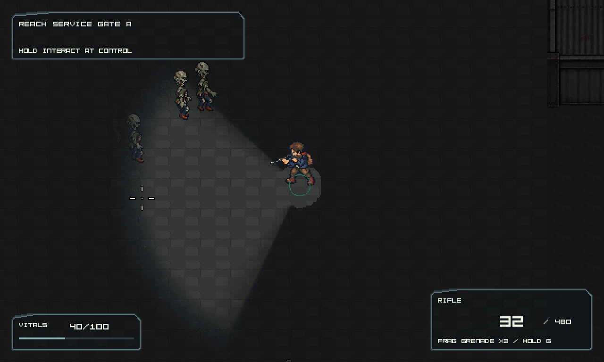

Black Veil / Development archive Historical review board. Recorded checks apply to their original snapshot. Images may be web-sized previews; this is a documentation archive, not a playable web build. All builds Measured Service Court performance
53.73 FPS average in the final 600-frame native application ring;
p95 28.45 ms, 108 living simulated zombies. 11/600 frames exceed 50 ms: brief stutter remains.
Measurements, paired captures and remaining gates

Exact packaged executable; population includes offscreen actors. Build identity and recorded checks: passed Executable SHA-256 E64CCA14C4683CD442162D28BE9F66C69F49B344E17A291AA17A609A79103576Recorded technical status passed Receipt comparison Matches receipt schema version 1 scope Service Court performance runtime slice base revision 338b3d7 executable sha256 E64CCA14C4683CD442162D28BE9F66C69F49B344E17A291AA17A609A79103576 technical report build/service_court_performance/project_checks.json review planning/reviews/2026-10-31-002-service-court-performance-runtime.md performance evidence performance_evidence.json integrity manifest integrity.json Recorded reports describe their original snapshot. Technical checks do not establish human art, gameplay or performance acceptance.
Open gates and limitations BL-101 remains Review; independent runtime acceptance and human playtest are not supplied. Native final 600-frame ring averages 53.73 FPS; 11/600 frames exceed 50 ms. No universal FPS claim. 108 living simulated zombies is not a count of simultaneously visible actors; final native snapshot has no active gore/effects. Probe CPU work is separate from application pacing and GPU timing. Six cases preserve 32 scheduled PNG hashes and normalized state. Full-world memory targets, some mask upload work, residency counters and two-gate/map-lifetime evidence remain open. Older failed attempts and invalid unseeded/flare comparisons are excluded; see the review. Original packaging returned an unrelated global-board refresh error; this board/catalog was regenerated with the scoped supported path. Reports, launch profile and evidence Captured evidence Existing captures; opening this page does not run the game or create new acceptance evidence.